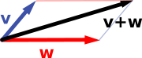

Vector space
A vector space (also called a linear space) is a collection of objects called vectors, which may be added together and multiplied ("scaled") by numbers, called scalars in this context. Scalars are often taken to be real numbers, but there are also vector spaces with scalar multiplication by complex numbers, rational numbers, or generally any field. The operations of vector addition and scalar multiplication must satisfy certain requirements, called axioms, listed below.
Euclidean vectors are an example of a vector space. They represent physical quantities such as forces: any two forces (of the same type) can be added to yield a third, and the multiplication of a force vector by a real multiplier is another force vector. In the same vein, but in a more geometric sense, vectors representing displacements in the plane or in three-dimensional space also form vector spaces. Vectors in vector spaces do not necessarily have to be arrow-like objects as they appear in the mentioned examples: vectors are regarded as abstract mathematical objects with particular properties, which in some cases can be visualized as arrows.
Vector spaces are the subject of linear algebra and are well characterized by their dimension, which, roughly speaking, specifies the number of independent directions in the space. Infinite-dimensional vector spaces arise naturally in mathematical analysis, as function spaces, whose vectors are functions. These vector spaces are generally endowed with additional structure, which may be a topology, allowing the consideration of issues of proximity and continuity. Among these topologies, those that are defined by a norm or inner product are more commonly used, as having a notion of distance between two vectors. This is particularly the case of Banach spaces and Hilbert spaces, which are fundamental in mathematical analysis.
Historically, the first ideas leading to vector spaces can be traced back as far as the 17th century's analytic geometry, matrices, systems of linear equations, and Euclidean vectors. The modern, more abstract treatment, first formulated by Giuseppe Peano in 1888, encompasses more general objects than Euclidean space, but much of the theory can be seen as an extension of classical geometric ideas like lines, planes and their higher-dimensional analogs.
Today, vector spaces are applied throughout mathematics, science and engineering. They are the appropriate linear-algebraic notion to deal with systems of linear equations; offer a framework for Fourier expansion, which is employed in image compression routines; or provide an environment that can be used for solution techniques for partial differential equations. Furthermore, vector spaces furnish an abstract, coordinate-free way of dealing with geometrical and physical objects such as tensors. This in turn allows the examination of local properties of manifolds by linearization techniques. Vector spaces may be generalized in several ways, leading to more advanced notions in geometry and abstract algebra.
| Algebraic structures |
|---|
Contents
[hide]Introduction and definition[edit]
The concept of vector space will first be explained by describing two particular examples:
First example: arrows in the plane[edit]
The first example of a vector space consists of arrows in a fixed plane, starting at one fixed point. This is used in physics to describe forces or velocities. Given any two such arrows, v and w, the parallelogram spanned by these two arrows contains one diagonal arrow that starts at the origin, too. This new arrow is called the sum of the two arrows and is denoted v + w. In the special case of two arrows on the same line, their sum is the arrow on this line whose length is the sum or the difference of the lengths, depending on whether the arrows have the same direction. Another operation that can be done with arrows is scaling: given any positive real number a, the arrow that has the same direction as v, but is dilated or shrunk by multiplying its length by a, is called multiplication of v by a. It is denoted av. When a is negative, av is defined as the arrow pointing in the opposite direction, instead.
The following shows a few examples: if a = 2, the resulting vector aw has the same direction as w, but is stretched to the double length of w (right image below). Equivalently 2w is the sum w + w. Moreover, (−1)v = −v has the opposite direction and the same length as v (blue vector pointing down in the right image).
|  |
Second example: ordered pairs of numbers[edit]
A second key example of a vector space is provided by pairs of real numbers x and y. (The order of the components x and y is significant, so such a pair is also called an ordered pair.) Such a pair is written as (x, y). The sum of two such pairs and multiplication of a pair with a number is defined as follows:
- (x1, y1) + (x2, y2) = (x1 + x2, y1 + y2)
and
- a (x, y) = (ax, ay).
The first example above reduces to this one if the arrows are represented by the pair of Cartesian coordinates of their end points.
Definition[edit]
A vector space over a field F is a set V together with two operations that satisfy the eight axioms listed below. Elements of V are commonly called vectors. Elements of F are commonly called scalars. The first operation, called vector addition or simply addition, takes any two vectors v and w and assigns to them a third vector which is commonly written as v + w, and called the sum of these two vectors. The second operation, called scalar multiplication takes any scalar a and any vector v and gives another vector av.
In this article, vectors are distinguished from scalars by boldface.[nb 1] In the two examples above, the field is the field of the real numbers and the set of the vectors consists of the planar arrows with fixed starting point and of pairs of real numbers, respectively.
To qualify as a vector space, the set V and the operations of addition and multiplication must adhere to a number of requirements called axioms.[1] In the list below, let u, v and w be arbitrary vectors in V, and a and b scalars in F.
| Axiom | Meaning |
| Associativity of addition | u + (v + w) = (u + v) + w |
| Commutativity of addition | u + v = v + u |
| Identity element of addition | There exists an element 0 ∈ V, called the zero vector, such that v + 0 = v for all v ∈ V. |
| Inverse elements of addition | For every v ∈ V, there exists an element −v ∈ V, called the additive inverse of v, such that v + (−v) = 0. |
| Compatibility of scalar multiplication with field multiplication | a(bv) = (ab)v [nb 2] |
| Identity element of scalar multiplication | 1v = v, where 1 denotes the multiplicative identity in F. |
| Distributivity of scalar multiplication with respect to vector addition | a(u + v) = au + av |
| Distributivity of scalar multiplication with respect to field addition | (a + b)v = av + bv |
These axioms generalize properties of the vectors introduced in the above examples. Indeed, the result of addition of two ordered pairs (as in the second example above) does not depend on the order of the summands:
- (xv, yv) + (xw, yw) = (xw, yw) + (xv, yv).
Likewise, in the geometric example of vectors as arrows, v + w = w + v since the parallelogram defining the sum of the vectors is independent of the order of the vectors. All other axioms can be checked in a similar manner in both examples. Thus, by disregarding the concrete nature of the particular type of vectors, the definition incorporates these two and many more examples in one notion of vector space.
Subtraction of two vectors and division by a (non-zero) scalar can be defined as
- v − w = v + (−w),
- v/a = (1/a)v.
When the scalar field F is the real numbers R, the vector space is called a real vector space. When the scalar field is the complex numbers, it is called a complex vector space. These two cases are the ones used most often in engineering. The general definition of a vector space allows scalars to be elements of any fixed field F. The notion is then known as an F-vector spaces or a vector space over F. A field is, essentially, a set of numbers possessing addition, subtraction, multiplication and division operations.[nb 3] For example, rational numbers also form a field.
In contrast to the intuition stemming from vectors in the plane and higher-dimensional cases, there is, in general vector spaces, no notion of nearness, angles or distances. To deal with such matters, particular types of vector spaces are introduced; see below.
Alternative formulations and elementary consequences[edit]
Vector addition and scalar multiplication are operations, satisfying the closure property: u + v and av are in V for all a in F, and u, v in V. Some older sources mention these properties as separate axioms.[2]
In the parlance of abstract algebra, the first four axioms can be subsumed by requiring the set of vectors to be an abelian group under addition. The remaining axioms give this group an F-module structure. In other words, there is a ring homomorphism f from the field F into the endomorphism ring of the group of vectors. Then scalar multiplication av is defined as (f(a))(v).[3]
There are a number of direct consequences of the vector space axioms. Some of them derive from elementary group theory, applied to the additive group of vectors: for example the zero vector 0 of V and the additive inverse −v of any vector v are unique. Other properties follow from the distributive law, for example av equals 0 if and only if a equals 0 or v equals 0.
History[edit]
Vector spaces stem from affine geometry via the introduction of coordinates in the plane or three-dimensional space. Around 1636, Descartes and Fermat founded analytic geometry by equating solutions to an equation of two variables with points on a plane curve.[4] In 1804, to achieve geometric solutions without using coordinates, Bolzano introduced certain operations on points, lines and planes, which are predecessors of vectors.[5] His work was then used in the conception of barycentric coordinates by Möbius in 1827.[6] In 1828 C. V. Mourey suggested the existence of an algebra surpassing not only ordinary algebra but also two-dimensional algebra created by him searching a geometrical interpretation of complex numbers.[7]
The definition of vectors was founded on Bellavitis' notion of the bipoint, an oriented segment of which one end is the origin and the other a target, then further elaborated with the presentation of complex numbers by Argand and Hamilton and the introduction of quaternions and biquaternions by the latter.[8] They are elements in R2, R4, and R8; their treatment as linear combinations can be traced back to Laguerre in 1867, who also defined systems of linear equations.
In 1857, Cayley introduced matrix notation, which allows for a harmonization and simplification of linear maps. Around the same time, Grassmann studied the barycentric calculus initiated by Möbius. He envisaged sets of abstract objects endowed with operations.[9] In his work, the concepts of linear independence and dimension, as well as scalar products, are present. In fact, Grassmann's 1844 work exceeds the framework of vector spaces, since his consideration of multiplication led him to what are today called algebras. Peano was the first to give the modern definition of vector spaces and linear maps in 1888.[10]
An important development of vector spaces is due to the construction of function spaces by Lebesgue. This was later formalized by Banach and Hilbert, around 1920.[11] At that time, algebra and the new field of functional analysis began to interact, notably with key concepts such as spaces of p-integrable functions and Hilbert spaces.[12] Vector spaces, including infinite-dimensional ones, then became a firmly established notion, and many mathematical branches started making use of this concept.
Examples[edit]
Coordinate spaces[edit]
The simplest example of a vector space over a field F is the field itself, equipped with its standard addition and multiplication. More generally, a vector space can be composed of n-tuples (sequences of length n) of elements of F, such as
- (a1, a2, ..., an), where each ai is an element of F.[13]
A vector space composed of all the n-tuples of a field F is known as a coordinate space, usually denoted Fn. The case n = 1 is the above-mentioned simplest example, in which the field F is also regarded as a vector space over itself. The case F = R and n = 2 was discussed in the introduction above.
Complex numbers and other field extensions[edit]
The set of complex numbers C, i.e., numbers that can be written in the form x + iy for real numbers x and y where i is the imaginary unit, form a vector space over the reals with the usual addition and multiplication: (x + iy) + (a + ib) = (x + a) + i(y + b) and c ⋅ (x + iy) = (c ⋅ x) + i(c ⋅ y) for real numbers x, y, a, b and c. The various axioms of a vector space follow from the fact that the same rules hold for complex number arithmetic.
In fact, the example of complex numbers is essentially the same (i.e., it is isomorphic) to the vector space of ordered pairs of real numbers mentioned above: if we think of the complex number x + i y as representing the ordered pair (x, y) in the complex plane then we see that the rules for sum and scalar product correspond exactly to those in the earlier example.
More generally, field extensions provide another class of examples of vector spaces, particularly in algebra and algebraic number theory: a field F containing a smaller field E is an E-vector space, by the given multiplication and addition operations of F.[14] For example, the complex numbers are a vector space over R, and the field extension is a vector space over Q.
Function spaces[edit]
Functions from any fixed set Ω to a field F also form vector spaces, by performing addition and scalar multiplication pointwise. That is, the sum of two functions f and g is the function (f + g) given by
- (f + g)(w) = f(w) + g(w),
and similarly for multiplication. Such function spaces occur in many geometric situations, when Ω is the real line or an interval, or other subsets of R. Many notions in topology and analysis, such as continuity, integrability or differentiability are well-behaved with respect to linearity: sums and scalar multiples of functions possessing such a property still have that property.[15] Therefore, the set of such functions are vector spaces. They are studied in greater detail using the methods of functional analysis, see below. Algebraic constraints also yield vector spaces: the vector space F[x] is given by polynomial functions:
- f(x) = r0 + r1x + ... + rn−1xn−1 + rnxn, where the coefficients r0, ..., rn are in F.[16]
Linear equations[edit]
Systems of homogeneous linear equations are closely tied to vector spaces.[17] For example, the solutions of
-
a + 3b + c = 0 4a + 2b + 2c = 0
are given by triples with arbitrary a, b = a/2, and c = −5a/2. They form a vector space: sums and scalar multiples of such triples still satisfy the same ratios of the three variables; thus they are solutions, too. Matrices can be used to condense multiple linear equations as above into one vector equation, namely
- Ax = 0,
where A = is the matrix containing the coefficients of the given equations, x is the vector (a, b, c), Ax denotes the matrix product, and 0 = (0, 0) is the zero vector. In a similar vein, the solutions of homogeneous linear differential equations form vector spaces. For example,
- f′′(x) + 2f′(x) + f(x) = 0
yields f(x) = a e−x + bx e−x, where a and b are arbitrary constants, and ex is the natural exponential function.
Basis and dimension[edit]
Bases allow to represent vectors by a sequence of scalars called coordinates or components. A basis is a (finite or infinite) set B = {bi}i ∈ I of vectors bi, for convenience often indexed by some index set I, that spans the whole space and is linearly independent. "Spanning the whole space" means that any vector v can be expressed as a finite sum (called a linear combination) of the basis elements:
-
(1)
where the ak are scalars, called the coordinates (or the components) of the vector v with respect to the basis B, and bik (k = 1, ..., n) elements of B. Linear independence means that the coordinates ak are uniquely determined for any vector in the vector space.
For example, the coordinate vectors e1 = (1, 0, ..., 0), e2 = (0, 1, 0, ..., 0), to en = (0, 0, ..., 0, 1), form a basis of Fn, called the standard basis, since any vector (x1, x2, ..., xn) can be uniquely expressed as a linear combination of these vectors:
- (x1, x2, ..., xn) = x1(1, 0, ..., 0) + x2(0, 1, 0, ..., 0) + ... + xn(0, ..., 0, 1) = x1e1 + x2e2 + ... + xnen.
The corresponding coordinates x1, x2, ..., xn are just the Cartesian coordinates of the vector.
Every vector space has a basis. This follows from Zorn's lemma, an equivalent formulation of the Axiom of Choice.[18] Given the other axioms of Zermelo–Fraenkel set theory, the existence of bases is equivalent to the axiom of choice.[19] The ultrafilter lemma, which is weaker than the axiom of choice, implies that all bases of a given vector space have the same number of elements, or cardinality (cf. Dimension theorem for vector spaces).[20] It is called the dimension of the vector space, denoted dim V. If the space is spanned by finitely many vectors, the above statements can be proven without such fundamental input from set theory.[21]
The dimension of the coordinate space Fn is n, by the basis exhibited above. The dimension of the polynomial ring F[x] introduced above is countably infinite, a basis is given by 1, x, x2, ... A fortiori, the dimension of more general function spaces, such as the space of functions on some (bounded or unbounded) interval, is infinite.[nb 4] Under suitable regularity assumptions on the coefficients involved, the dimension of the solution space of a homogeneous ordinary differential equation equals the degree of the equation.[22] For example, the solution space for the above equation is generated by e−x and xe−x. These two functions are linearly independent over R, so the dimension of this space is two, as is the degree of the equation.
A field extension over the rationals Q can be thought of as a vector space over Q (by defining vector addition as field addition, defining scalar multiplication as field multiplication by elements of Q, and otherwise ignoring the field multiplication). The dimension (or degree) of the field extension Q(α) over Q depends on α. If α satisfies some polynomial equation
- qnαn + qn−1αn−1 + ... + q0 = 0, with rational coefficients qn, ..., q0.
("α is algebraic"), the dimension is finite. More precisely, it equals the degree of the minimal polynomial having α as a root.[23] For example, the complex numbers C are a two-dimensional real vector space, generated by 1 and the imaginary unit i. The latter satisfies i2 + 1 = 0, an equation of degree two. Thus, C is a two-dimensional R-vector space (and, as any field, one-dimensional as a vector space over itself, C). If α is not algebraic, the dimension of Q(α) over Q is infinite. For instance, for α = π there is no such equation, in other words π is transcendental.[24]
Linear maps and matrices[edit]
The relation of two vector spaces can be expressed by linear map or linear transformation. They are functions that reflect the vector space structure—i.e., they preserve sums and scalar multiplication:
- f(x + y) = f(x) + f(y) and f(a · x) = a · f(x) for all x and y in V, all a in F.[25]
An isomorphism is a linear map f : V → W such that there exists an inverse map g : W → V, which is a map such that the two possible compositions f ∘ g : W → W and g ∘ f : V → V are identity maps. Equivalently, f is both one-to-one (injective) and onto (surjective).[26] If there exists an isomorphism between V and W, the two spaces are said to be isomorphic; they are then essentially identical as vector spaces, since all identities holding in V are, via f, transported to similar ones in W, and vice versa via g.
For example, the "arrows in the plane" and "ordered pairs of numbers" vector spaces in the introduction are isomorphic: a planar arrow v departing at the origin of some (fixed) coordinate system can be expressed as an ordered pair by considering the x- and y-component of the arrow, as shown in the image at the right. Conversely, given a pair (x, y), the arrow going by x to the right (or to the left, if x is negative), and y up (down, if y is negative) turns back the arrow v.
Linear maps V → W between two vector spaces form a vector space HomF(V, W), also denoted L(V, W).[27] The space of linear maps from V to F is called the dual vector space, denoted V∗.[28] Via the injective natural map V → V∗∗, any vector space can be embedded into its bidual; the map is an isomorphism if and only if the space is finite-dimensional.[29]
Once a basis of V is chosen, linear maps f : V → W are completely determined by specifying the images of the basis vectors, because any element of V is expressed uniquely as a linear combination of them.[30] If dim V = dim W, a 1-to-1 correspondence between fixed bases of V and W gives rise to a linear map that maps any basis element of V to the corresponding basis element of W. It is an isomorphism, by its very definition.[31] Therefore, two vector spaces are isomorphic if their dimensions agree and vice versa. Another way to express this is that any vector space is completely classified (up to isomorphism) by its dimension, a single number. In particular, any n-dimensional F-vector space V is isomorphic to Fn. There is, however, no "canonical" or preferred isomorphism; actually an isomorphism φ : Fn → V is equivalent to the choice of a basis of V, by mapping the standard basis of Fn to V, via φ. The freedom of choosing a convenient basis is particularly useful in the infinite-dimensional context, see below.
Matrices[edit]
Matrices are a useful notion to encode linear maps.[32] They are written as a rectangular array of scalars as in the image at the right. Any m-by-n matrix A gives rise to a linear map from Fn to Fm, by the following
- , where denotes summation,
or, using the matrix multiplication of the matrix A with the coordinate vector x:
- x ↦ Ax.
Moreover, after choosing bases of V and W, any linear map f : V → W is uniquely represented by a matrix via this assignment.[33]
The determinant det (A) of a square matrix A is a scalar that tells whether the associated map is an isomorphism or not: to be so it is sufficient and necessary that the determinant is nonzero.[34] The linear transformation of Rn corresponding to a real n-by-n matrix is orientation preserving if and only if its determinant is positive.
Eigenvalues and eigenvectors[edit]
Endomorphisms, linear maps f : V → V, are particularly important since in this case vectors v can be compared with their image under f, f(v). Any nonzero vector v satisfying λv = f(v), where λ is a scalar, is called an eigenvector of f with eigenvalue λ.[nb 5][35] Equivalently, v is an element of the kernel of the difference f − λ · Id (where Id is the identity map V → V). If V is finite-dimensional, this can be rephrased using determinants: f having eigenvalue λ is equivalent to
- det(f − λ · Id) = 0.
By spelling out the definition of the determinant, the expression on the left hand side can be seen to be a polynomial function in λ, called the characteristic polynomial of f.[36] If the field F is large enough to contain a zero of this polynomial (which automatically happens for F algebraically closed, such as F = C) any linear map has at least one eigenvector. The vector space V may or may not possess an eigenbasis, a basis consisting of eigenvectors. This phenomenon is governed by the Jordan canonical form of the map.[nb 6] The set of all eigenvectors corresponding to a particular eigenvalue of f forms a vector space known as the eigenspace corresponding to the eigenvalue (and f) in question. To achieve the spectral theorem, the corresponding statement in the infinite-dimensional case, the machinery of functional analysis is needed, see below.
Basic constructions[edit]
In addition to the above concrete examples, there are a number of standard linear algebraic constructions that yield vector spaces related to given ones. In addition to the definitions given below, they are also characterized by universal properties, which determine an object X by specifying the linear maps from X to any other vector space.
Subspaces and quotient spaces[edit]
A nonempty subset W of a vector space V that is closed under addition and scalar multiplication (and therefore contains the 0-vector of V) is called a linear subspace of V, or simply a subspace of V, when the ambient space is unambiguously a vector space.[37][nb 7] Subspaces of V are vector spaces (over the same field) in their own right. The intersection of all subspaces containing a given set S of vectors is called its span, and it is the smallest subspace of V containing the set S. Expressed in terms of elements, the span is the subspace consisting of all the linear combinations of elements of S.[38]
A linear subspace of dimension 1 is a vector line. A linear subspace of dimension 2 is a vector plane. A linear subspace that contains all elements but one of a basis of the ambient space is a vector hyperplane. In a vector space of finite dimension n, a vector hyperplane is thus a subspace of dimension n – 1.
The counterpart to subspaces are quotient vector spaces.[39] Given any subspace W ⊂ V, the quotient space V/W ("V modulo W") is defined as follows: as a set, it consists of v + W = {v + w : w ∈ W}, where v is an arbitrary vector in V. The sum of two such elements v1 + W and v2 + W is (v1 + v2) + W, and scalar multiplication is given by a · (v + W) = (a · v) + W. The key point in this definition is that v1 + W = v2 + W if and only if the difference of v1 and v2 lies in W.[nb 8] This way, the quotient space "forgets" information that is contained in the subspace W.
The kernel ker(f) of a linear map f : V → W consists of vectors v that are mapped to 0 in W.[40] Both kernel and image im(f) = {f(v) : v ∈ V} are subspaces of V and W, respectively.[41] The existence of kernels and images is part of the statement that the category of vector spaces (over a fixed field F) is an abelian category, i.e. a corpus of mathematical objects and structure-preserving maps between them (a category) that behaves much like the category of abelian groups.[42] Because of this, many statements such as the first isomorphism theorem (also called rank–nullity theorem in matrix-related terms)
- V / ker(f) ≡ im(f).
and the second and third isomorphism theorem can be formulated and proven in a way very similar to the corresponding statements for groups.
An important example is the kernel of a linear map x ↦ Ax for some fixed matrix A, as above. The kernel of this map is the subspace of vectors x such that Ax = 0, which is precisely the set of solutions to the system of homogeneous linear equations belonging to A. This concept also extends to linear differential equations
- , where the coefficients ai are functions in x, too.
In the corresponding map
- ,
the derivatives of the function f appear linearly (as opposed to f′′(x)2, for example). Since differentiation is a linear procedure (i.e., (f + g)′ = f′ + g ′ and (c·f)′ = c·f′ for a constant c) this assignment is linear, called a linear differential operator. In particular, the solutions to the differential equation D(f) = 0 form a vector space (over R or C).
Direct product and direct sum[edit]
The direct product of vector spaces and the direct sum of vector spaces are two ways of combining an indexed family of vector spaces into a new vector space.
The direct product of a family of vector spaces Vi consists of the set of all tuples (vi)i ∈ I, which specify for each index i in some index set I an element vi of Vi.[43] Addition and scalar multiplication is performed componentwise. A variant of this construction is the direct sum (also called coproduct and denoted ), where only tuples with finitely many nonzero vectors are allowed. If the index set I is finite, the two constructions agree, but in general they are different.
Tensor product[edit]
The tensor product V ⊗F W, or simply V ⊗ W, of two vector spaces V and W is one of the central notions of multilinear algebra which deals with extending notions such as linear maps to several variables. A map g : V × W → X is called bilinear if g is linear in both variables v and w. That is to say, for fixed w the map v ↦ g(v, w) is linear in the sense above and likewise for fixed v.
The tensor product is a particular vector space that is a universal recipient of bilinear maps g, as follows. It is defined as the vector space consisting of finite (formal) sums of symbols called tensors
- v1 ⊗ w1 + v2 ⊗ w2 + ... + vn ⊗ wn,
subject to the rules
- a · (v ⊗ w) = (a · v) ⊗ w = v ⊗ (a · w), where a is a scalar,
- (v1 + v2) ⊗ w = v1 ⊗ w + v2 ⊗ w, and
- v ⊗ (w1 + w2) = v ⊗ w1 + v ⊗ w2.[44]
These rules ensure that the map f from the V × W to V ⊗ W that maps a tuple (v, w) to v ⊗ w is bilinear. The universality states that given any vector space X and any bilinear map g : V × W → X, there exists a unique map u, shown in the diagram with a dotted arrow, whose composition with f equals g: u(v ⊗ w) = g(v, w).[45] This is called the universal property of the tensor product, an instance of the method—much used in advanced abstract algebra—to indirectly define objects by specifying maps from or to this object.
Vector spaces with additional structure[edit]
From the point of view of linear algebra, vector spaces are completely understood insofar as any vector space is characterized, up to isomorphism, by its dimension. However, vector spaces per se do not offer a framework to deal with the question—crucial to analysis—whether a sequence of functions converges to another function. Likewise, linear algebra is not adapted to deal with infinite series, since the addition operation allows only finitely many terms to be added. Therefore, the needs of functional analysis require considering additional structures.
A vector space may be given a partial order ≤, under which some vectors can be compared.[46] For example, n-dimensional real space Rn can be ordered by comparing its vectors componentwise. Ordered vector spaces, for example Riesz spaces, are fundamental to Lebesgue integration, which relies on the ability to express a function as a difference of two positive functions
- f = f+ − f−,
where f+ denotes the positive part of f and f− the negative part.[47]
Normed vector spaces and inner product spaces[edit]
"Measuring" vectors is done by specifying a norm, a datum which measures lengths of vectors, or by an inner product, which measures angles between vectors. Norms and inner products are denoted and , respectively. The datum of an inner product entails that lengths of vectors can be defined too, by defining the associated norm . Vector spaces endowed with such data are known as normed vector spaces and inner product spaces, respectively.[48]
Coordinate space Fn can be equipped with the standard dot product:
In R2, this reflects the common notion of the angle between two vectors x and y, by the law of cosines:
Because of this, two vectors satisfying are called orthogonal. An important variant of the standard dot product is used in Minkowski space: R4 endowed with the Lorentz product
In contrast to the standard dot product, it is not positive definite: also takes negative values, for example for . Singling out the fourth coordinate—corresponding to time, as opposed to three space-dimensions—makes it useful for the mathematical treatment of special relativity.
Topological vector spaces[edit]
Convergence questions are treated by considering vector spaces V carrying a compatible topology, a structure that allows one to talk about elements being close to each other.[50][51] Compatible here means that addition and scalar multiplication have to be continuous maps. Roughly, if x and y in V, and a in F vary by a bounded amount, then so do x + y and ax.[nb 9] To make sense of specifying the amount a scalar changes, the field F also has to carry a topology in this context; a common choice are the reals or the complex numbers.
In such topological vector spaces one can consider series of vectors. The infinite sum
denotes the limit of the corresponding finite partial sums of the sequence (fi)i∈N of elements of V. For example, the fi could be (real or complex) functions belonging to some function space V, in which case the series is a function series. The mode of convergence of the series depends on the topology imposed on the function space. In such cases, pointwise convergence and uniform convergence are two prominent examples.
A way to ensure the existence of limits of certain infinite series is to restrict attention to spaces where any Cauchy sequence has a limit; such a vector space is called complete. Roughly, a vector space is complete provided that it contains all necessary limits. For example, the vector space of polynomials on the unit interval [0,1], equipped with the topology of uniform convergence is not complete because any continuous function on [0,1] can be uniformly approximated by a sequence of polynomials, by the Weierstrass approximation theorem.[52] In contrast, the space of all continuous functions on [0,1] with the same topology is complete.[53] A norm gives rise to a topology by defining that a sequence of vectors vn converges to v if and only if
Banach and Hilbert spaces are complete topological vector spaces whose topologies are given, respectively, by a norm and an inner product. Their study—a key piece of functional analysis—focusses on infinite-dimensional vector spaces, since all norms on finite-dimensional topological vector spaces give rise to the same notion of convergence.[54] The image at the right shows the equivalence of the 1-norm and ∞-norm on R2: as the unit "balls" enclose each other, a sequence converges to zero in one norm if and only if it so does in the other norm. In the infinite-dimensional case, however, there will generally be inequivalent topologies, which makes the study of topological vector spaces richer than that of vector spaces without additional data.
From a conceptual point of view, all notions related to topological vector spaces should match the topology. For example, instead of considering all linear maps (also called functionals) V → W, maps between topological vector spaces are required to be continuous.[55] In particular, the (topological) dual space V∗ consists of continuous functionals V → R (or to C). The fundamental Hahn–Banach theorem is concerned with separating subspaces of appropriate topological vector spaces by continuous functionals.[56]
Banach spaces[edit]
Banach spaces, introduced by Stefan Banach, are complete normed vector spaces.[57] A first example is the vector space ℓ p consisting of infinite vectors with real entries x = (x1, x2, ...) whose p-norm (1 ≤ p ≤ ∞) given by
- for p < ∞ and
is finite. The topologies on the infinite-dimensional space ℓ p are inequivalent for different p. E.g. the sequence of vectors xn = (2−n, 2−n, ..., 2−n, 0, 0, ...), i.e. the first 2n components are 2−n, the following ones are 0, converges to the zero vector for p = ∞, but does not for p = 1:
- , but
More generally than sequences of real numbers, functions f: Ω → R are endowed with a norm that replaces the above sum by the Lebesgue integral
The space of integrable functions on a given domain Ω (for example an interval) satisfying | f |p < ∞, and equipped with this norm are called Lebesgue spaces, denoted Lp(Ω).[nb 10] These spaces are complete.[58] (If one uses the Riemann integral instead, the space is not complete, which may be seen as a justification for Lebesgue's integration theory.[nb 11]) Concretely this means that for any sequence of Lebesgue-integrable functions f1, f2, ... with | fn |p < ∞, satisfying the condition
there exists a function f(x) belonging to the vector space Lp(Ω) such that
Imposing boundedness conditions not only on the function, but also on its derivatives leads to Sobolev spaces.[59]
Hilbert spaces[edit]
Complete inner product spaces are known as Hilbert spaces, in honor of David Hilbert.[60] The Hilbert space L2(Ω), with inner product given by
where denotes the complex conjugate of g(x),[61][nb 12] is a key case.
By definition, in a Hilbert space any Cauchy sequence converges to a limit. Conversely, finding a sequence of functions fn with desirable properties that approximates a given limit function, is equally crucial. Early analysis, in the guise of the Taylor approximation, established an approximation of differentiable functions f by polynomials.[62] By the Stone–Weierstrass theorem, every continuous function on [a, b] can be approximated as closely as desired by a polynomial.[63] A similar approximation technique by trigonometric functions is commonly called Fourier expansion, and is much applied in engineering, see below. More generally, and more conceptually, the theorem yields a simple description of what "basic functions", or, in abstract Hilbert spaces, what basic vectors suffice to generate a Hilbert space H, in the sense that the closure of their span (i.e., finite linear combinations and limits of those) is the whole space. Such a set of functions is called a basis of H, its cardinality is known as the Hilbert space dimension.[nb 13] Not only does the theorem exhibit suitable basis functions as sufficient for approximation purposes, but together with the Gram-Schmidt process, it enables one to construct a basis of orthogonal vectors.[64] Such orthogonal bases are the Hilbert space generalization of the coordinate axes in finite-dimensional Euclidean space.
The solutions to various differential equations can be interpreted in terms of Hilbert spaces. For example, a great many fields in physics and engineering lead to such equations and frequently solutions with particular physical properties are used as basis functions, often orthogonal.[65] As an example from physics, the time-dependent Schrödinger equation in quantum mechanics describes the change of physical properties in time by means of a partial differential equation, whose solutions are called wavefunctions.[66] Definite values for physical properties such as energy, or momentum, correspond to eigenvalues of a certain (linear) differential operator and the associated wavefunctions are called eigenstates. The spectral theorem decomposes a linear compact operator acting on functions in terms of these eigenfunctions and their eigenvalues.[67]
Algebras over fields[edit]
General vector spaces do not possess a multiplication between vectors. A vector space equipped with an additional bilinear operator defining the multiplication of two vectors is an algebra over a field.[68] Many algebras stem from functions on some geometrical object: since functions with values in a given field can be multiplied pointwise, these entities form algebras. The Stone–Weierstrass theorem mentioned above, for example, relies on Banach algebras which are both Banach spaces and algebras.
Commutative algebra makes great use of rings of polynomials in one or several variables, introduced above. Their multiplication is both commutative and associative. These rings and their quotients form the basis of algebraic geometry, because they are rings of functions of algebraic geometric objects.[69]
Another crucial example are Lie algebras, which are neither commutative nor associative, but the failure to be so is limited by the constraints ([x, y] denotes the product of x and y):
- [x, y] = −[y, x] (anticommutativity), and
- [x, [y, z]] + [y, [z, x]] + [z, [x, y]] = 0 (Jacobi identity).[70]
Examples include the vector space of n-by-n matrices, with [x, y] = xy − yx, the commutator of two matrices, and R3, endowed with the cross product.
The tensor algebra T(V) is a formal way of adding products to any vector space V to obtain an algebra.[71] As a vector space, it is spanned by symbols, called simple tensors
- v1 ⊗ v2 ⊗ ... ⊗ vn, where the degree n varies.
The multiplication is given by concatenating such symbols, imposing the distributive law under addition, and requiring that scalar multiplication commute with the tensor product ⊗, much the same way as with the tensor product of two vector spaces introduced above. In general, there are no relations between v1 ⊗ v2 and v2 ⊗ v1. Forcing two such elements to be equal leads to the symmetric algebra, whereas forcing v1 ⊗ v2 = − v2 ⊗ v1 yields the exterior algebra.[72]
When a field, F is explicitly stated, a common term used is F-algebra.
Applications[edit]
Vector spaces have manifold applications as they occur in many circumstances, namely wherever functions with values in some field are involved. They provide a framework to deal with analytical and geometrical problems, or are used in the Fourier transform. This list is not exhaustive: many more applications exist, for example in optimization. The minimax theorem of game theory stating the existence of a unique payoff when all players play optimally can be formulated and proven using vector spaces methods.[73] Representation theory fruitfully transfers the good understanding of linear algebra and vector spaces to other mathematical domains such as group theory.[74]
Distributions[edit]
A distribution (or generalized function) is a linear map assigning a number to each "test" function, typically a smooth function with compact support, in a continuous way: in the above terminology the space of distributions is the (continuous) dual of the test function space.[75] The latter space is endowed with a topology that takes into account not only f itself, but also all its higher derivatives. A standard example is the result of integrating a test function f over some domain Ω:
When Ω = {p}, the set consisting of a single point, this reduces to the Dirac distribution, denoted by δ, which associates to a test function f its value at the p: δ(f) = f(p). Distributions are a powerful instrument to solve differential equations. Since all standard analytic notions such as derivatives are linear, they extend naturally to the space of distributions. Therefore, the equation in question can be transferred to a distribution space, which is bigger than the underlying function space, so that more flexible methods are available for solving the equation. For example, Green's functions and fundamental solutions are usually distributions rather than proper functions, and can then be used to find solutions of the equation with prescribed boundary conditions. The found solution can then in some cases be proven to be actually a true function, and a solution to the original equation (e.g., using the Lax–Milgram theorem, a consequence of the Riesz representation theorem).[76]
Fourier analysis[edit]

{kind=link}
{kind=link}
{kind=link}
{kind=link}
{kind=link}
{kind=link}
{kind=link}
{kind=link}
{kind=link}
{kind=link}
{kind=link}
{kind=link}
Resolving a periodic function into a sum of trigonometric functions forms a Fourier series, a technique much used in physics and engineering.[nb 14][77] The underlying vector space is usually the Hilbert space L2(0, 2π), for which the functions sin mx and cos mx (m an integer) form an orthogonal basis.[78] The Fourier expansion of an L2 function f is
The coefficients am and bm are called Fourier coefficients of f, and are calculated by the formulas[79]
- ,
In physical terms the function is represented as a superposition of sine waves and the coefficients give information about the function's frequency spectrum.[80] A complex-number form of Fourier series is also commonly used.[79] The concrete formulae above are consequences of a more general mathematical duality called Pontryagin duality.[81] Applied to the group R, it yields the classical Fourier transform; an application in physics are reciprocal lattices, where the underlying group is a finite-dimensional real vector space endowed with the additional datum of a lattice encoding positions of atoms in crystals.[82]
Fourier series are used to solve boundary value problems in partial differential equations.[83] In 1822, Fourier first used this technique to solve the heat equation.[84] A discrete version of the Fourier series can be used in sampling applications where the function value is known only at a finite number of equally spaced points. In this case the Fourier series is finite and its value is equal to the sampled values at all points.[85] The set of coefficients is known as the discrete Fourier transform (DFT) of the given sample sequence. The DFT is one of the key tools of digital signal processing, a field whose applications include radar, speech encoding, image compression.[86] The JPEG image format is an application of the closely related discrete cosine transform.[87]
The fast Fourier transform is an algorithm for rapidly computing the discrete Fourier transform.[88] It is used not only for calculating the Fourier coefficients but, using the convolution theorem, also for computing the convolution of two finite sequences.[89] They in turn are applied in digital filters[90] and as a rapid multiplication algorithm for polynomials and large integers (Schönhage-Strassen algorithm).[91][92]
Differential geometry[edit]
{kind=link}
The tangent plane to a surface at a point is naturally a vector space whose origin is identified with the point of contact. The tangent plane is the best linear approximation, or linearization, of a surface at a point.[nb 15] Even in a three-dimensional Euclidean space, there is typically no natural way to prescribe a basis of the tangent plane, and so it is conceived of as an abstract vector space rather than a real coordinate space. The tangent space is the generalization to higher-dimensional differentiable manifolds.[93]
Riemannian manifolds are manifolds whose tangent spaces are endowed with a suitable inner product.[94] Derived therefrom, the Riemann curvature tensor encodes all curvatures of a manifold in one object, which finds applications in general relativity, for example, where the Einstein curvature tensor describes the matter and energy content of space-time.[95][96] The tangent space of a Lie group can be given naturally the structure of a Lie algebra and can be used to classify compact Lie groups.[97]
Generalizations[edit]
Vector bundles[edit]

A vector bundle is a family of vector spaces parametrized continuously by a topological space X.[93] More precisely, a vector bundle over X is a topological space E equipped with a continuous map
- π : E → X
such that for every x in X, the fiber π−1(x) is a vector space. The case dim V = 1 is called a line bundle. For any vector space V, the projection X × V → X makes the product X × V into a "trivial" vector bundle. Vector bundles over X are required to be locally a product of X and some (fixed) vector space V: for every x in X, there is a neighborhood U of x such that the restriction of π to π−1(U) is isomorphic[nb 16] to the trivial bundle U × V → U. Despite their locally trivial character, vector bundles may (depending on the shape of the underlying space X) be "twisted" in the large (i.e., the bundle need not be (globally isomorphic to) the trivial bundle X × V). For example, the Möbius strip can be seen as a line bundle over the circle S1 (by identifying open intervals with the real line). It is, however, different from the cylinder S1 × R, because the latter is orientable whereas the former is not.[98]
Properties of certain vector bundles provide information about the underlying topological space. For example, the tangent bundle consists of the collection of tangent spaces parametrized by the points of a differentiable manifold. The tangent bundle of the circle S1 is globally isomorphic to S1 × R, since there is a global nonzero vector field on S1.[nb 17] In contrast, by the hairy ball theorem, there is no (tangent) vector field on the 2-sphere S2 which is everywhere nonzero.[99] K-theory studies the isomorphism classes of all vector bundles over some topological space.[100] In addition to deepening topological and geometrical insight, it has purely algebraic consequences, such as the classification of finite-dimensional real division algebras: R, C, the quaternions H and the octonions O.[citation needed]
The cotangent bundle of a differentiable manifold consists, at every point of the manifold, of the dual of the tangent space, the cotangent space. Sections of that bundle are known as differential one-forms.
Modules[edit]
Modules are to rings what vector spaces are to fields: the same axioms, applied to a ring R instead of a field F, yield modules.[101] The theory of modules, compared to that of vector spaces, is complicated by the presence of ring elements that do not have multiplicative inverses. For example, modules need not have bases, as the Z-module (i.e., abelian group) Z/2Z shows; those modules that do (including all vector spaces) are known as free modules. Nevertheless, a vector space can be compactly defined as a module over a ring which is a field with the elements being called vectors. Some authors use the term vector space to mean modules over a division ring.[102] The algebro-geometric interpretation of commutative rings via their spectrum allows the development of concepts such as locally free modules, the algebraic counterpart to vector bundles.
Affine and projective spaces[edit]
{kind=link}
Roughly, affine spaces are vector spaces whose origins are not specified.[103] More precisely, an affine space is a set with a free transitive vector space action. In particular, a vector space is an affine space over itself, by the map
- V × V → V, (v, a) ↦ a + v.
If W is a vector space, then an affine subspace is a subset of W obtained by translating a linear subspace V by a fixed vector x ∈ W; this space is denoted by x + V (it is a coset of V in W) and consists of all vectors of the form x + v for v ∈ V. An important example is the space of solutions of a system of inhomogeneous linear equations
- Ax = b
generalizing the homogeneous case b = 0 above.[104] The space of solutions is the affine subspace x + V where x is a particular solution of the equation, and V is the space of solutions of the homogeneous equation (the nullspace of A).
The set of one-dimensional subspaces of a fixed finite-dimensional vector space V is known as projective space; it may be used to formalize the idea of parallel lines intersecting at infinity.[105] Grassmannians and flag manifolds generalize this by parametrizing linear subspaces of fixed dimension k and flags of subspaces, respectively.
See also[edit]
- Vector (mathematics and physics), for a list of various kinds of vectors
|
Notes[edit]
- Jump up ^ It is also common, especially in physics, to denote vectors with an arrow on top: .
- Jump up ^ This axiom and the next refer to two different operations: scalar multiplication: bv; and field multiplication: ab. They do not assert the associativity of either operation. More formally, scalar multiplication is a group action of the multiplicative group of the field F on the vector space V.
- Jump up ^ Some authors (such as Brown 1991) restrict attention to the fields R or C, but most of the theory is unchanged for an arbitrary field.
- Jump up ^ The indicator functions of intervals (of which there are infinitely many) are linearly independent, for example.
- Jump up ^ The nomenclature derives from German "eigen", which means own or proper.
- Jump up ^ Roman 2005, ch. 8, p. 140. See also Jordan–Chevalley decomposition.
- Jump up ^ This is typically the case when a vector space is also considered as an affine space. In this case, a linear subspace contains the zero vector, while an affine subspace does not necessarily contain it.
- Jump up ^ Some authors (such as Roman 2005) choose to start with this equivalence relation and derive the concrete shape of V/W from this.
- Jump up ^ This requirement implies that the topology gives rise to a uniform structure, Bourbaki 1989, ch. II
- Jump up ^ The triangle inequality for |−|p is provided by the Minkowski inequality. For technical reasons, in the context of functions one has to identify functions that agree almost everywhere to get a norm, and not only a seminorm.
- Jump up ^ "Many functions in L2 of Lebesgue measure, being unbounded, cannot be integrated with the classical Riemann integral. So spaces of Riemann integrable functions would not be complete in the L2 norm, and the orthogonal decomposition would not apply to them. This shows one of the advantages of Lebesgue integration.", Dudley 1989, §5.3, p. 125
- Jump up ^ For p ≠2, Lp(Ω) is not a Hilbert space.
- Jump up ^ A basis of a Hilbert space is not the same thing as a basis in the sense of linear algebra above. For distinction, the latter is then called a Hamel basis.
- Jump up ^ Although the Fourier series is periodic, the technique can be applied to any L2 function on an interval by considering the function to be continued periodically outside the interval. See Kreyszig 1988, p. 601
- Jump up ^ That is to say (BSE-3 2001), the plane passing through the point of contact P such that the distance from a point P1 on the surface to the plane is infinitesimally small compared to the distance from P1 to P in the limit as P1 approaches P along the surface.
- Jump up ^ That is, there is a homeomorphism from π−1(U) to V × U which restricts to linear isomorphisms between fibers.
- Jump up ^ A line bundle, such as the tangent bundle of S1 is trivial if and only if there is a section that vanishes nowhere, see Husemoller 1994, Corollary 8.3. The sections of the tangent bundle are just vector fields.
Footnotes[edit]
- Jump up ^ Roman 2005, ch. 1, p. 27
- Jump up ^ van der Waerden 1993, Ch. 19
- Jump up ^ Bourbaki 1998, §II.1.1. Bourbaki calls the group homomorphisms f(a) homotheties.
- Jump up ^ Bourbaki 1969, ch. "Algèbre linéaire et algèbre multilinéaire", pp. 78–91
- Jump up ^ Bolzano 1804
- Jump up ^ Möbius 1827
- Jump up ^ Crowe, Michel J. (1994), A History of Vector Analysis: The Evolution of the Idea of a Vectorial System, Dover, p. 11 and 16, ISBN 0-486-67910-1
- Jump up ^ Hamilton 1853
- Jump up ^ Grassmann 2000
- Jump up ^ Peano 1888, ch. IX
- Jump up ^ Banach 1922
- Jump up ^ Dorier 1995, Moore 1995
- Jump up ^ Lang 1987, ch. I.1
- Jump up ^ Lang 2002, ch. V.1
- Jump up ^ e.g. Lang 1993, ch. XII.3., p. 335
- Jump up ^ Lang 1987, ch. IX.1
- Jump up ^ Lang 1987, ch. VI.3.
- Jump up ^ Roman 2005, Theorem 1.9, p. 43
- Jump up ^ Blass 1984
- Jump up ^ Halpern 1966, pp. 670–673
- Jump up ^ Artin 1991, Theorem 3.3.13
- Jump up ^ Braun 1993, Th. 3.4.5, p. 291
- Jump up ^ Stewart 1975, Proposition 4.3, p. 52
- Jump up ^ Stewart 1975, Theorem 6.5, p. 74
- Jump up ^ Roman 2005, ch. 2, p. 45
- Jump up ^ Lang 1987, ch. IV.4, Corollary, p. 106
- Jump up ^ Lang 1987, Example IV.2.6
- Jump up ^ Lang 1987, ch. VI.6
- Jump up ^ Halmos 1974, p. 28, Ex. 9
- Jump up ^ Lang 1987, Theorem IV.2.1, p. 95
- Jump up ^ Roman 2005, Th. 2.5 and 2.6, p. 49
- Jump up ^ Lang 1987, ch. V.1
- Jump up ^ Lang 1987, ch. V.3., Corollary, p. 106
- Jump up ^ Lang 1987, Theorem VII.9.8, p. 198
- Jump up ^ Roman 2005, ch. 8, p. 135–156
- Jump up ^ Lang 1987, ch. IX.4
- Jump up ^ Roman 2005, ch. 1, p. 29
- Jump up ^ Roman 2005, ch. 1, p. 35
- Jump up ^ Roman 2005, ch. 3, p. 64
- Jump up ^ Lang 1987, ch. IV.3.
- Jump up ^ Roman 2005, ch. 2, p. 48
- Jump up ^ Mac Lane 1998
- Jump up ^ Roman 2005, ch. 1, pp. 31–32
- Jump up ^ Lang 2002, ch. XVI.1
- Jump up ^ Roman 2005, Th. 14.3. See also Yoneda lemma.
- Jump up ^ Schaefer & Wolff 1999, pp. 204–205
- Jump up ^ Bourbaki 2004, ch. 2, p. 48
- Jump up ^ Roman 2005, ch. 9
- Jump up ^ Naber 2003, ch. 1.2
- Jump up ^ Treves 1967
- Jump up ^ Bourbaki 1987
- Jump up ^ Kreyszig 1989, §4.11-5
- Jump up ^ Kreyszig 1989, §1.5-5
- Jump up ^ Choquet 1966, Proposition III.7.2
- Jump up ^ Treves 1967, p. 34–36
- Jump up ^ Lang 1983, Cor. 4.1.2, p. 69
- Jump up ^ Treves 1967, ch. 11
- Jump up ^ Treves 1967, Theorem 11.2, p. 102
- Jump up ^ Evans 1998, ch. 5
- Jump up ^ Treves 1967, ch. 12
- Jump up ^ Dennery 1996, p.190
- Jump up ^ Lang 1993, Th. XIII.6, p. 349
- Jump up ^ Lang 1993, Th. III.1.1
- Jump up ^ Choquet 1966, Lemma III.16.11
- Jump up ^ Kreyszig 1999, Chapter 11
- Jump up ^ Griffiths 1995, Chapter 1
- Jump up ^ Lang 1993, ch. XVII.3
- Jump up ^ Lang 2002, ch. III.1, p. 121
- Jump up ^ Eisenbud 1995, ch. 1.6
- Jump up ^ Varadarajan 1974
- Jump up ^ Lang 2002, ch. XVI.7
- Jump up ^ Lang 2002, ch. XVI.8
- Jump up ^ Luenberger 1997, §7.13
- Jump up ^ See representation theory and group representation.
- Jump up ^ Lang 1993, Ch. XI.1
- Jump up ^ Evans 1998, Th. 6.2.1
- Jump up ^ Folland 1992, p. 349 ff
- Jump up ^ Gasquet & Witomski 1999, p. 150
- ^ Jump up to: a b Gasquet & Witomski 1999, §4.5
- Jump up ^ Gasquet & Witomski 1999, p. 57
- Jump up ^ Loomis 1953, Ch. VII
- Jump up ^ Ashcroft & Mermin 1976, Ch. 5
- Jump up ^ Kreyszig 1988, p. 667
- Jump up ^ Fourier 1822
- Jump up ^ Gasquet & Witomski 1999, p. 67
- Jump up ^ Ifeachor & Jervis 2002, pp. 3–4, 11
- Jump up ^ Wallace Feb 1992
- Jump up ^ Ifeachor & Jervis 2002, p. 132
- Jump up ^ Gasquet & Witomski 1999, §10.2
- Jump up ^ Ifeachor & Jervis 2002, pp. 307–310
- Jump up ^ Gasquet & Witomski 1999, §10.3
- Jump up ^ Schönhage & Strassen 1971
- ^ Jump up to: a b Spivak 1999, ch. 3
- Jump up ^ Jost 2005. See also Lorentzian manifold.
- Jump up ^ Misner, Thorne & Wheeler 1973, ch. 1.8.7, p. 222 and ch. 2.13.5, p. 325
- Jump up ^ Jost 2005, ch. 3.1
- Jump up ^ Varadarajan 1974, ch. 4.3, Theorem 4.3.27
- Jump up ^ Kreyszig 1991, §34, p. 108
- Jump up ^ Eisenberg & Guy 1979
- Jump up ^ Atiyah 1989
- Jump up ^ Artin 1991, ch. 12
- Jump up ^ Grillet, Pierre Antoine. Abstract algebra. Vol. 242. Springer Science & Business Media, 2007.
- Jump up ^ Meyer 2000, Example 5.13.5, p. 436
- Jump up ^ Meyer 2000, Exercise 5.13.15–17, p. 442
- Jump up ^ Coxeter 1987
References[edit]
Algebra[edit]
- Artin, Michael (1991), Algebra, Prentice Hall, ISBN 978-0-89871-510-1
- Blass, Andreas (1984), "Existence of bases implies the axiom of choice", Axiomatic set theory (Boulder, Colorado, 1983), Contemporary Mathematics, 31, Providence, R.I.: American Mathematical Society, pp. 31–33, MR 763890
- Brown, William A. (1991), Matrices and vector spaces, New York: M. Dekker, ISBN 978-0-8247-8419-5
- Lang, Serge (1987), Linear algebra, Berlin, New York: Springer-Verlag, ISBN 978-0-387-96412-6
- Lang, Serge (2002), Algebra, Graduate Texts in Mathematics, 211 (Revised third ed.), New York: Springer-Verlag, ISBN 978-0-387-95385-4, MR 1878556
- Mac Lane, Saunders (1999), Algebra (3rd ed.), pp. 193–222, ISBN 0-8218-1646-2
- Meyer, Carl D. (2000), Matrix Analysis and Applied Linear Algebra, SIAM, ISBN 978-0-89871-454-8
- Roman, Steven (2005), Advanced Linear Algebra, Graduate Texts in Mathematics, 135 (2nd ed.), Berlin, New York: Springer-Verlag, ISBN 978-0-387-24766-3
- Spindler, Karlheinz (1993), Abstract Algebra with Applications: Volume 1: Vector spaces and groups, CRC, ISBN 978-0-8247-9144-5
- van der Waerden, Bartel Leendert (1993), Algebra (in German) (9th ed.), Berlin, New York: Springer-Verlag, ISBN 978-3-540-56799-8
Analysis[edit]
- Bourbaki, Nicolas (1987), Topological vector spaces, Elements of mathematics, Berlin, New York: Springer-Verlag, ISBN 978-3-540-13627-9
- Bourbaki, Nicolas (2004), Integration I, Berlin, New York: Springer-Verlag, ISBN 978-3-540-41129-1
- Braun, Martin (1993), Differential equations and their applications: an introduction to applied mathematics, Berlin, New York: Springer-Verlag, ISBN 978-0-387-97894-9
- BSE-3 (2001), "Tangent plane", in Hazewinkel, Michiel, Encyclopedia of Mathematics, Springer, ISBN 978-1-55608-010-4
- Choquet, Gustave (1966), Topology, Boston, MA: Academic Press
- Dennery, Philippe; Krzywicki, Andre (1996), Mathematics for Physicists, Courier Dover Publications, ISBN 978-0-486-69193-0
- Dudley, Richard M. (1989), Real analysis and probability, The Wadsworth & Brooks/Cole Mathematics Series, Pacific Grove, CA: Wadsworth & Brooks/Cole Advanced Books & Software, ISBN 978-0-534-10050-6
- Dunham, William (2005), The Calculus Gallery, Princeton University Press, ISBN 978-0-691-09565-3
- Evans, Lawrence C. (1998), Partial differential equations, Providence, R.I.: American Mathematical Society, ISBN 978-0-8218-0772-9
- Folland, Gerald B. (1992), Fourier Analysis and Its Applications, Brooks-Cole, ISBN 978-0-534-17094-3
- Gasquet, Claude; Witomski, Patrick (1999), Fourier Analysis and Applications: Filtering, Numerical Computation, Wavelets, Texts in Applied Mathematics, New York: Springer-Verlag, ISBN 0-387-98485-2
- Ifeachor, Emmanuel C.; Jervis, Barrie W. (2001), Digital Signal Processing: A Practical Approach (2nd ed.), Harlow, Essex, England: Prentice-Hall (published 2002), ISBN 0-201-59619-9
- Krantz, Steven G. (1999), A Panorama of Harmonic Analysis, Carus Mathematical Monographs, Washington, DC: Mathematical Association of America, ISBN 0-88385-031-1
- Kreyszig, Erwin (1988), Advanced Engineering Mathematics (6th ed.), New York: John Wiley & Sons, ISBN 0-471-85824-2
- Kreyszig, Erwin (1989), Introductory functional analysis with applications, Wiley Classics Library, New York: John Wiley & Sons, ISBN 978-0-471-50459-7, MR 992618
- Lang, Serge (1983), Real analysis, Addison-Wesley, ISBN 978-0-201-14179-5
- Lang, Serge (1993), Real and functional analysis, Berlin, New York: Springer-Verlag, ISBN 978-0-387-94001-4
- Loomis, Lynn H. (1953), An introduction to abstract harmonic analysis, Toronto-New York–London: D. Van Nostrand Company, Inc., pp. x+190
- Schaefer, Helmut H.; Wolff, M.P. (1999), Topological vector spaces (2nd ed.), Berlin, New York: Springer-Verlag, ISBN 978-0-387-98726-2
- Treves, François (1967), Topological vector spaces, distributions and kernels, Boston, MA: Academic Press
Historical references[edit]
- Banach, Stefan (1922), "Sur les opérations dans les ensembles abstraits et leur application aux équations intégrales (On operations in abstract sets and their application to integral equations)" (PDF), Fundamenta Mathematicae (in French), 3, ISSN 0016-2736
- Bolzano, Bernard (1804), Betrachtungen über einige Gegenstände der Elementargeometrie (Considerations of some aspects of elementary geometry) (in German)
- Bourbaki, Nicolas (1969), Éléments d'histoire des mathématiques (Elements of history of mathematics) (in French), Paris: Hermann
- Dorier, Jean-Luc (1995), "A general outline of the genesis of vector space theory", Historia Mathematica, 22 (3): 227–261, doi:10.1006/hmat.1995.1024, MR 1347828
- Fourier, Jean Baptiste Joseph (1822), Théorie analytique de la chaleur (in French), Chez Firmin Didot, père et fils
- Grassmann, Hermann (1844), Die Lineale Ausdehnungslehre - Ein neuer Zweig der Mathematik (in German), O. Wigand, reprint: Hermann Grassmann. Translated by Lloyd C. Kannenberg. (2000), Kannenberg, L.C., ed., Extension Theory, Providence, R.I.: American Mathematical Society, ISBN 978-0-8218-2031-5
- Hamilton, William Rowan (1853), Lectures on Quaternions, Royal Irish Academy
- Möbius, August Ferdinand (1827), Der Barycentrische Calcul : ein neues Hülfsmittel zur analytischen Behandlung der Geometrie (Barycentric calculus: a new utility for an analytic treatment of geometry) (in German)[dead link]
- Moore, Gregory H. (1995), "The axiomatization of linear algebra: 1875–1940", Historia Mathematica, 22 (3): 262–303, doi:10.1006/hmat.1995.1025
- Peano, Giuseppe (1888), Calcolo Geometrico secondo l'Ausdehnungslehre di H. Grassmann preceduto dalle Operazioni della Logica Deduttiva (in Italian), Turin
Further references[edit]
- Ashcroft, Neil; Mermin, N. David (1976), Solid State Physics, Toronto: Thomson Learning, ISBN 978-0-03-083993-1
- Atiyah, Michael Francis (1989), K-theory, Advanced Book Classics (2nd ed.), Addison-Wesley, ISBN 978-0-201-09394-0, MR 1043170
- Bourbaki, Nicolas (1998), Elements of Mathematics : Algebra I Chapters 1-3, Berlin, New York: Springer-Verlag, ISBN 978-3-540-64243-5
- Bourbaki, Nicolas (1989), General Topology. Chapters 1-4, Berlin, New York: Springer-Verlag, ISBN 978-3-540-64241-1
- Coxeter, Harold Scott MacDonald (1987), Projective Geometry (2nd ed.), Berlin, New York: Springer-Verlag, ISBN 978-0-387-96532-1
- Eisenberg, Murray; Guy, Robert (1979), "A proof of the hairy ball theorem", The American Mathematical Monthly, Mathematical Association of America, 86 (7): 572–574, doi:10.2307/2320587, JSTOR 2320587
- Eisenbud, David (1995), Commutative algebra, Graduate Texts in Mathematics, 150, Berlin, New York: Springer-Verlag, ISBN 978-0-387-94269-8, MR 1322960
- Goldrei, Derek (1996), Classic Set Theory: A guided independent study (1st ed.), London: Chapman and Hall, ISBN 0-412-60610-0
- Griffiths, David J. (1995), Introduction to Quantum Mechanics, Upper Saddle River, NJ: Prentice Hall, ISBN 0-13-124405-1
- Halmos, Paul R. (1974), Finite-dimensional vector spaces, Berlin, New York: Springer-Verlag, ISBN 978-0-387-90093-3
- Halpern, James D. (Jun 1966), "Bases in Vector Spaces and the Axiom of Choice", Proceedings of the American Mathematical Society, American Mathematical Society, 17 (3): 670–673, doi:10.2307/2035388, JSTOR 2035388
- Husemoller, Dale (1994), Fibre Bundles (3rd ed.), Berlin, New York: Springer-Verlag, ISBN 978-0-387-94087-8
- Jost, Jürgen (2005), Riemannian Geometry and Geometric Analysis (4th ed.), Berlin, New York: Springer-Verlag, ISBN 978-3-540-25907-7
- Kreyszig, Erwin (1991), Differential geometry, New York: Dover Publications, pp. xiv+352, ISBN 978-0-486-66721-8
- Kreyszig, Erwin (1999), Advanced Engineering Mathematics (8th ed.), New York: John Wiley & Sons, ISBN 0-471-15496-2
- Luenberger, David (1997), Optimization by vector space methods, New York: John Wiley & Sons, ISBN 978-0-471-18117-0
- Mac Lane, Saunders (1998), Categories for the Working Mathematician (2nd ed.), Berlin, New York: Springer-Verlag, ISBN 978-0-387-98403-2
- Misner, Charles W.; Thorne, Kip; Wheeler, John Archibald (1973), Gravitation, W. H. Freeman, ISBN 978-0-7167-0344-0
- Naber, Gregory L. (2003), The geometry of Minkowski spacetime, New York: Dover Publications, ISBN 978-0-486-43235-9, MR 2044239
- Schönhage, A.; Strassen, Volker (1971), "Schnelle Multiplikation großer Zahlen (Fast multiplication of big numbers)" (PDF), Computing (in German), 7: 281–292, doi:10.1007/bf02242355, ISSN 0010-485X
- Spivak, Michael (1999), A Comprehensive Introduction to Differential Geometry (Volume Two), Houston, TX: Publish or Perish
- Stewart, Ian (1975), Galois Theory, Chapman and Hall Mathematics Series, London: Chapman and Hall, ISBN 0-412-10800-3
- Varadarajan, V. S. (1974), Lie groups, Lie algebras, and their representations, Prentice Hall, ISBN 978-0-13-535732-3
- Wallace, G.K. (Feb 1992), "The JPEG still picture compression standard", IEEE Transactions on Consumer Electronics, 38 (1): xviii–xxxiv, doi:10.1109/30.125072, ISSN 0098-3063
- Weibel, Charles A. (1994). An introduction to homological algebra. Cambridge Studies in Advanced Mathematics. 38. Cambridge University Press. ISBN 978-0-521-55987-4. OCLC 36131259. MR 1269324.
External links[edit]
| The Wikibook Linear Algebra has a page on the topic of: Real vector spaces |
{kind=link}
| The Wikibook Linear Algebra has a page on the topic of: Vector spaces |
- Hazewinkel, Michiel, ed. (2001), "Vector space", Encyclopedia of Mathematics, Springer, ISBN 978-1-55608-010-4
- A lecture about fundamental concepts related to vector spaces (given at MIT)
- A graphical simulator for the concepts of span, linear dependency, base and dimension